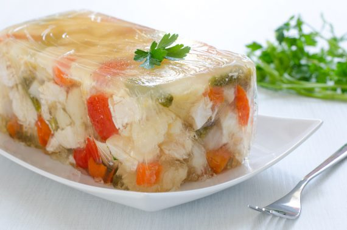

Home
Jellied Chicken and Peas

Description
A classic in fine cuisine, this masterpiece will rock your socks off
Ingredients
- 2 ⅔ cups chicken stock
- ¾ teaspoon salt
- 1 ¼ tablespoons soy sauce
- 2 sheets of gelatin
- ¼ lb. chicken (boneless, cooked in the stock)
- a pinch of salt
- a pinch of monosodium glutamate
- 5 tablespoons canned green peas
Steps
- Season the chicken stock with the salt and soy sauce.
- Soak the gelatin sheets in water.
- Cut the chicken into bite-size thin strips and sprinkle with the salt and monosodium glutamate.
- Heat the chicken stock and add the gelatin sheets over a low heat. Simmer until the gelatin is melted.
- Add the chicken and half the green peas. Arrange the remaining peas in a circle on the bottom of a wet bowl.
- Pour a little of the soup slowly over the circle of peas. Allow this small amount to set, then pour in the remaining soup mixture.
- Refrigerate until it is set. Turn out onto a platter and serve.
Source:https://vintagerecipecards.com/2021/03/05/jellied-chicken-and-peas/